| CLICK Project Loader Make Backup Copy
|
Topic: CL343

|
Description
This method of CLICK Project Loader is used to create a CLICK Loader File with or without Intelligent module.
About CLICK Loader File
Please refer to the How to Use the CLICK Project Loader topic in this Help File.
Setup
Below are the steps to backup a CLICK Loader File to a CLICK PLC with or without Intelligent Modules:
Step 1
Ensure the Make backup copy radio is selected and press Next>>.
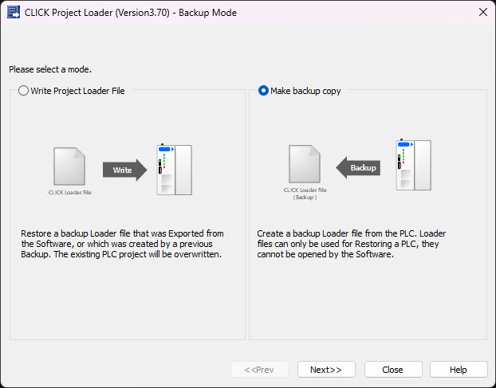
Step 2
Select the CLICK Project Loader File save location. Click the browse button located on the right side of the text field in the image below to open the Save As window. Name the CLICK Project Loader File and click Save.
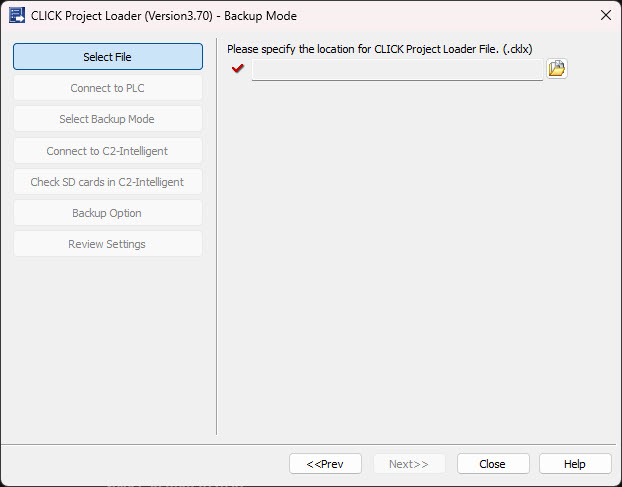
Step 3
Name CLICK Project Loader File and click Save.
| |
IMPORTANT NOTE: Do Not enter the same File Name as the CLICK Loader File you received from the OEM. Enter a new File Name.
|
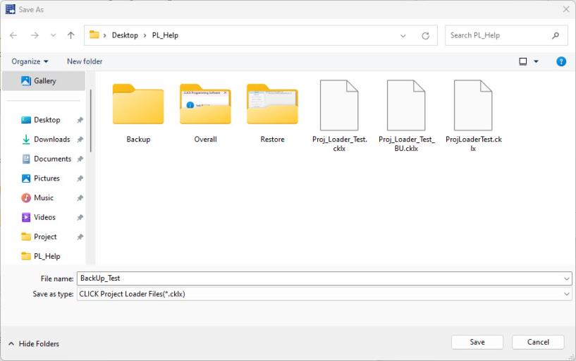
Step 4
Ensure file path looks correct and text box has a Green Check beside it. Then press Next>> button on the Project Loader screen.
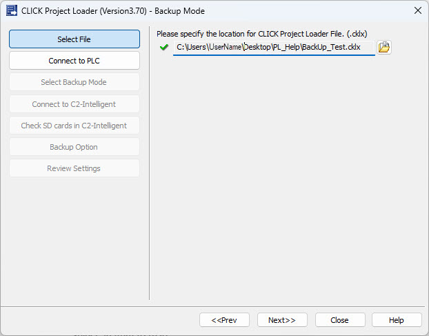
| |
Note: The file format of this Backup file is the same as the CLICK Loader File. Therefore, the Backup file can be opened with the CLICK Project Loader, but not on the CLICK Programming Software. This means that the backed up CLICK Project can not be read nor edited.
|
Step 5
Press the Setup button to select the target CLICK PLC to backup.
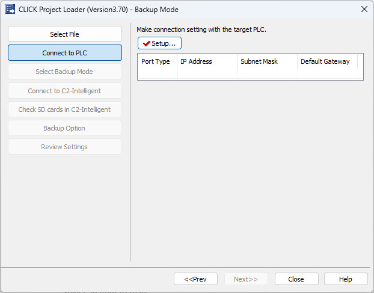
Highlight the appropriate CLICK PLC and press OK.
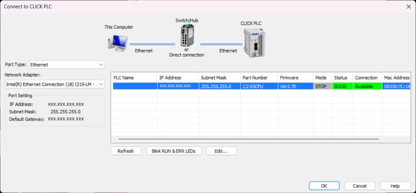
Step 6
Ensure CLICK PLC IP Address is correct and Setup has a Green Check beside it. Notice the Project Loader detected the CLICK PLC has Intelligent Modules and has new selections available. Then press Next>> button on the Project Loader screen.
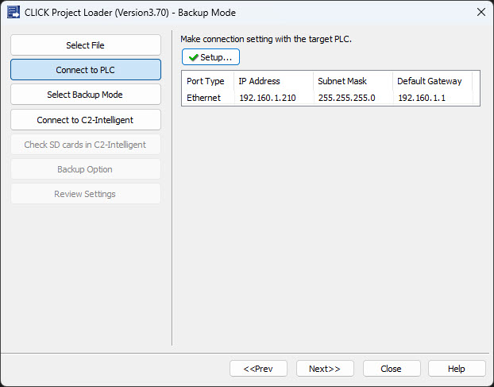
Step 7
Decide which method you want to use when backing up and click the link below that matches.
-
If backing up without Intelligent modules click  HERE
HERE
-
If backing up with Intelligent modules using Ethernet click HERE
-
If backing up with Intelligent Modules using USB click HERE
-
If backing up with Intelligent Modules using SD card click HERE
Backup without Intelligent modules - Step 8
Using the check box decide if you want to include the project file in the CLICK Project Loader file. After doing so press Next>>.
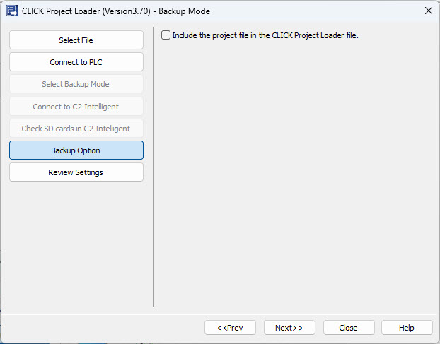
Backup without Intelligent modules - Step 9
Ensure all data is correct on the Review screen and press Start.

|
Note: The PLC Mode Switch must be set to the STOP Mode in order for the CLICK Project Loader to proceed. If the PLC is set to RUN Mode, an Error window like the one shown below will display.
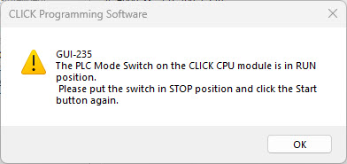
|
|
Note: Starting with Ver3.40 the Project Loader will check the CPU part number and prevent from downloading an incompatible project file. There are three groups of compatible CPUs:
- C0-0x CLICK Serial CPUs
- C0-1x CLICK Ethernet CPUs
- C2-x CLICK PLUS CPUs
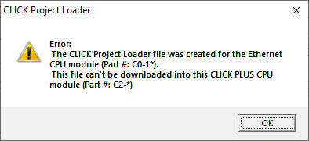
|
Loading bar shows status as CLICK PLC being backed up.
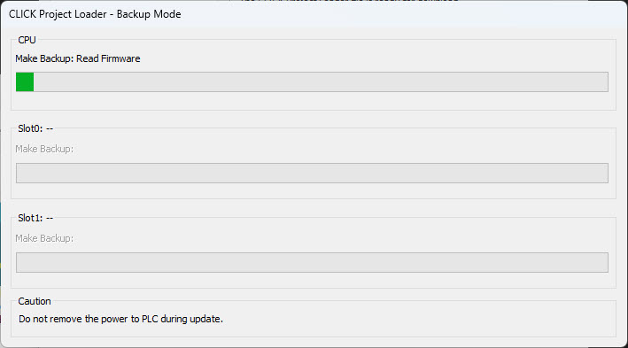
Once Backup in completed, the Backup Complete window shown below opens, indicating all task are Completed successfully.
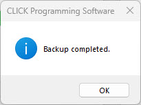
Backup with Intelligent modules using Ethernet- Step 8
Ensure Use Ethernet or USB port radio is selected and press Next>>.
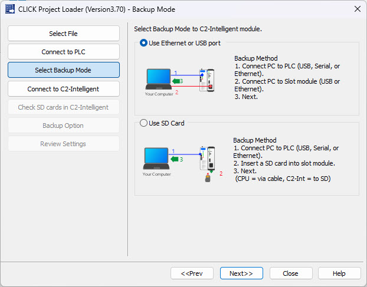
Backup with Intelligent modules using Ethernet- Step 9
In the drop down menus select Ethernet. Then press Setup to open the Network Setup screen.
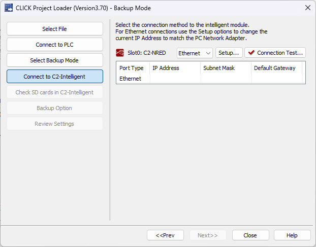
On the Network Setup screen, choose your Network Adapter and temporarily set your Intelligent module IP Address to the same Network as your PC using the Edit button.
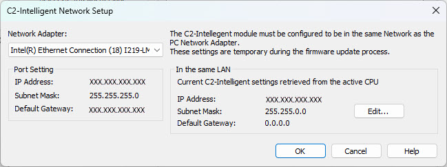
Backup with Intelligent modules using Ethernet- Step 10
Ensure IP Address is correct and press Connection Test to check communication between Intelligent Module and PC.
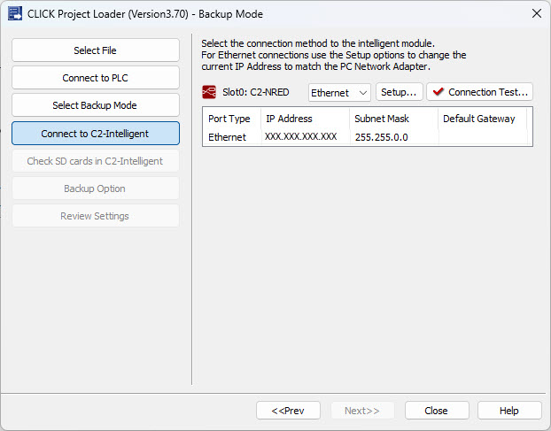
After Connection Test is complete you will receive the following pop-up.
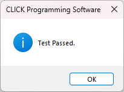
And the Check Mark beside Connection Test will turn green. Now press Next>> to continue.
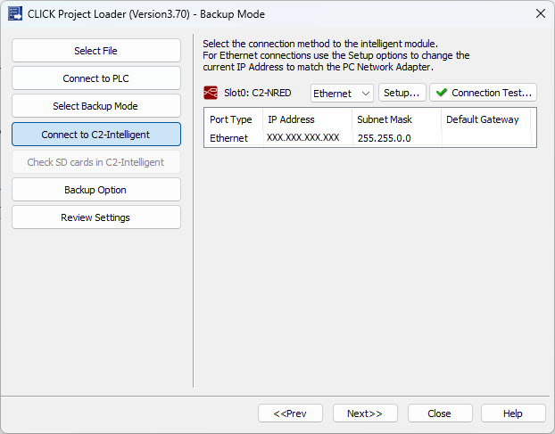
Backup with Intelligent modules using Ethernet- Step 11
Using the check box decide if you want to include the project file in the CLICK Project Loader file. After doing so press Next>>.
Backup with Intelligent modules using Ethernet- Step 12
Ensure all data is correct on the Review screen and press Start.
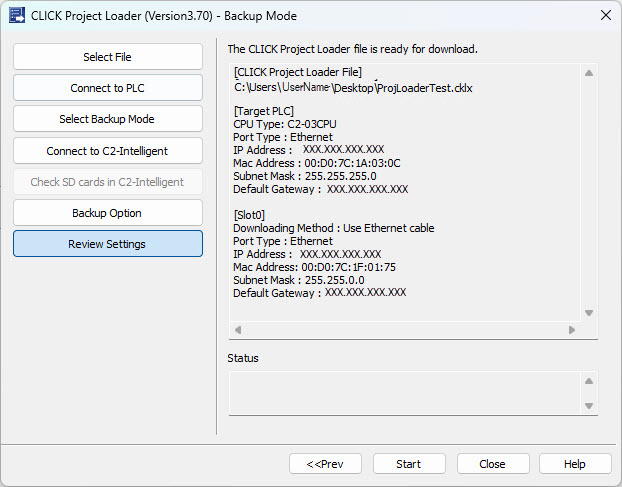
|
Note: The PLC Mode Switch must be set to the STOP Mode in order for the CLICK Project Loader to proceed. If the PLC is set to RUN Mode, an Error window like the one shown below will display.
|
|
Note: Starting with Ver3.40 the Project Loader will check the CPU part number and prevent from downloading an incompatible project file. There are three groups of compatible CPUs:
- C0-0x CLICK Serial CPUs
- C0-1x CLICK Ethernet CPUs
- C2-x CLICK PLUS CPUs
|
Loading bar shows status as CLICK PLC being backed up.
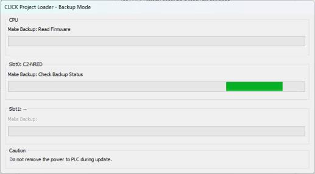
Once Backup in completed, the Backup Complete window shown below opens, indicating all task are Completed successfully.
Backup with Intelligent modules using USB - Step 8
Ensure Use Ethernet or USB port radio is selected and press Next>>.
Backup with Intelligent modules using USB - Step 9
In the drop down menus select USB. Then press Connection Test.
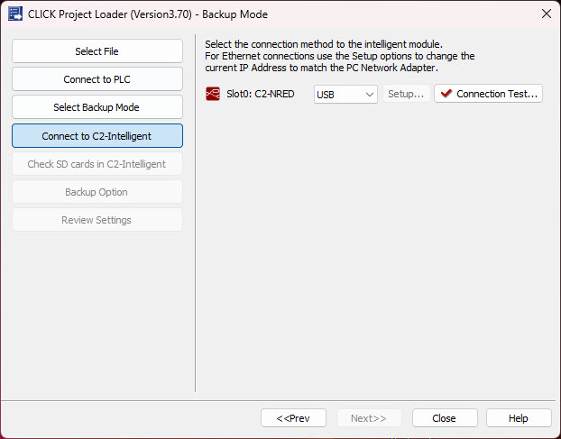
After Connection Test is complete you will receive the following pop-up.
And the Check Mark beside Connection Test will turn green. Now press Next>> to continue.
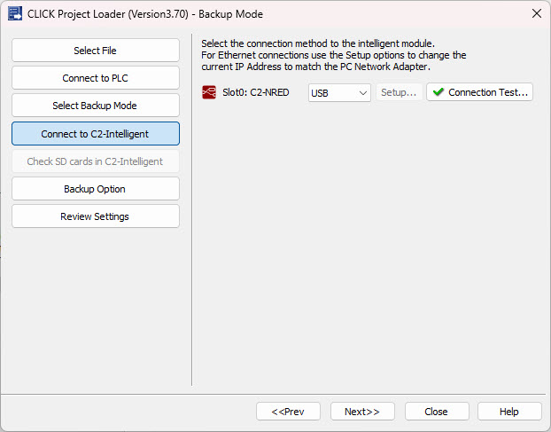
Backup with Intelligent modules using USB - Step 10
Using the check box decide if you want to include the project file in the CLICK Project Loader file. After doing so press Next>>.
Backup with Intelligent modules using USB - Step 11
Ensure all data is correct on the Review screen and press Start.
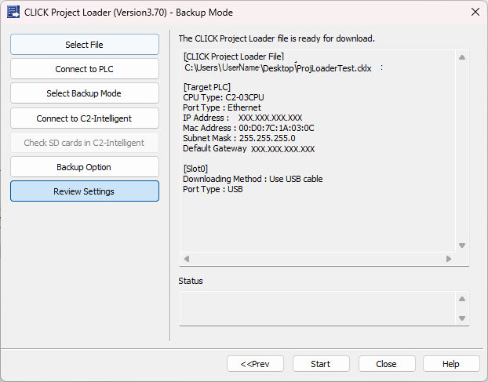
|
Note: The PLC Mode Switch must be set to the STOP Mode in order for the CLICK Project Loader to proceed. If the PLC is set to RUN Mode, an Error window like the one shown below will display.
|
|
Note: Starting with Ver3.40 the Project Loader will check the CPU part number and prevent from downloading an incompatible project file. There are three groups of compatible CPUs:
- C0-0x CLICK Serial CPUs
- C0-1x CLICK Ethernet CPUs
- C2-x CLICK PLUS CPUs
|
Loading bar shows status as CLICK PLC being backed up.
Once Backup in completed, the Backup Complete window shown below opens, indicating all task are Completed successfully.
Backup with Intelligent modules using SD card - Step 8
Ensure Use SD Card radio is selected follow instructions on screen and press Next>>.
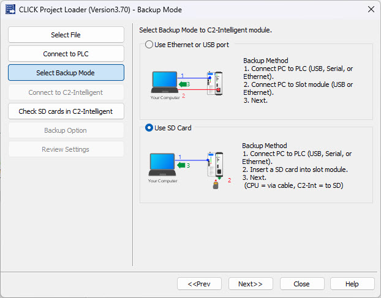
Backup with Intelligent modules using SD card - Step 9
Insert your SD Card into the Intelligent module and press Retry to check SD Cards.
.
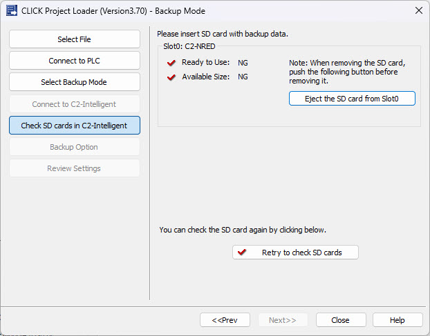
If all three check marks on screen turn green, press Next>>.
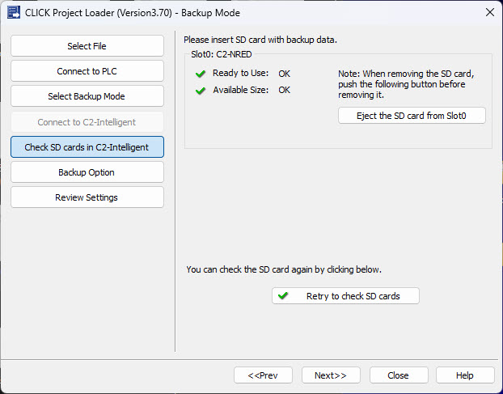
Backup with Intelligent modules using SD card - Step 10
Using the check box decide if you want to include the project file in the CLICK Project Loader file. After doing so press Next>>.
Backup with Intelligent modules using SD card - Step 11
Ensure all data is correct on the Review screen and press Start.
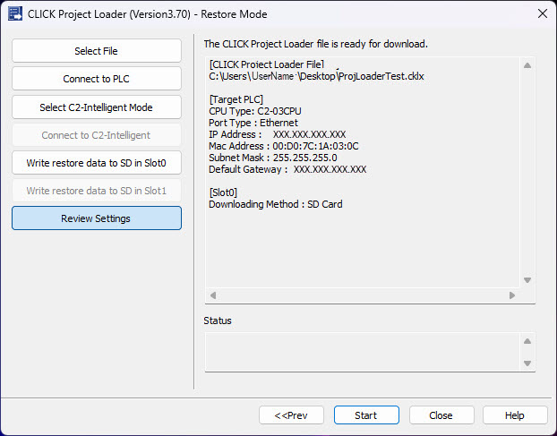
|
Note: The PLC Mode Switch must be set to the STOP Mode in order for the CLICK Project Loader to proceed. If the PLC is set to RUN Mode, an Error window like the one shown below will display.
|
|
Note: Starting with Ver3.40 the Project Loader will check the CPU part number and prevent from downloading an incompatible project file. There are three groups of compatible CPUs:
- C0-0x CLICK Serial CPUs
- C0-1x CLICK Ethernet CPUs
- C2-x CLICK PLUS CPUs
|
Loading bar shows status as CLICK PLC being backed up.
Once Backup in completed, the Backup Complete window shown below opens, indicating all task are Completed successfully.